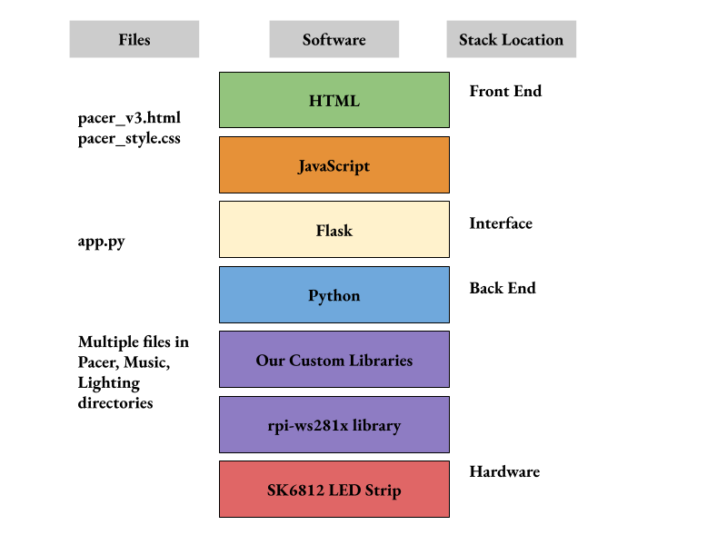
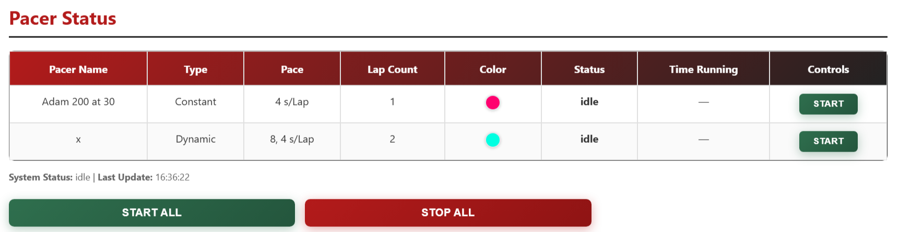
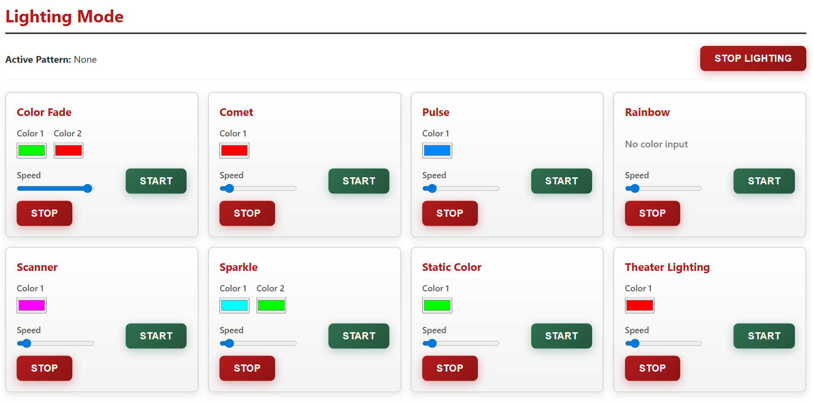
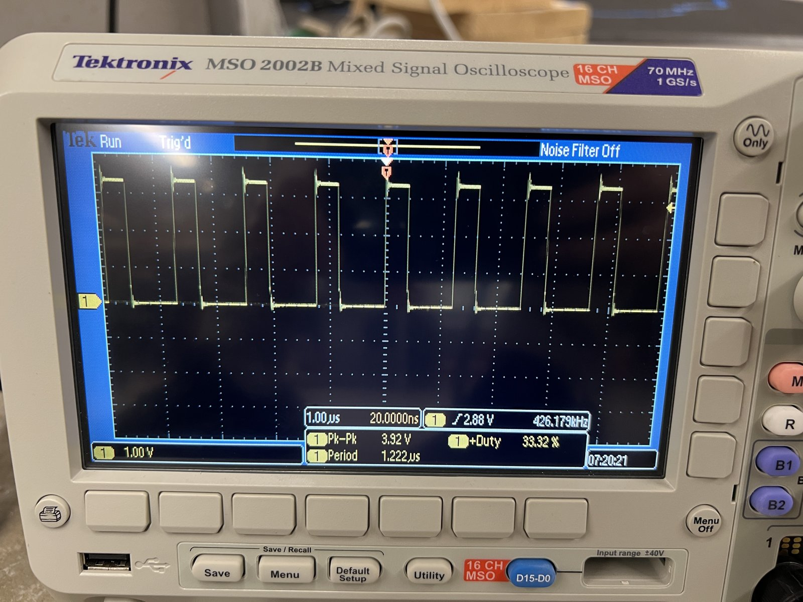
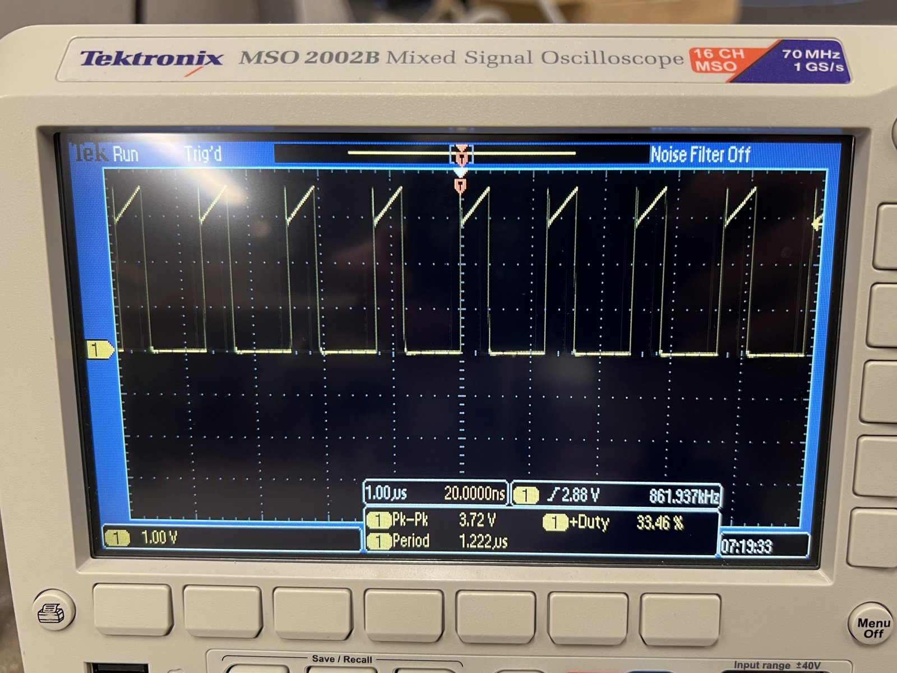
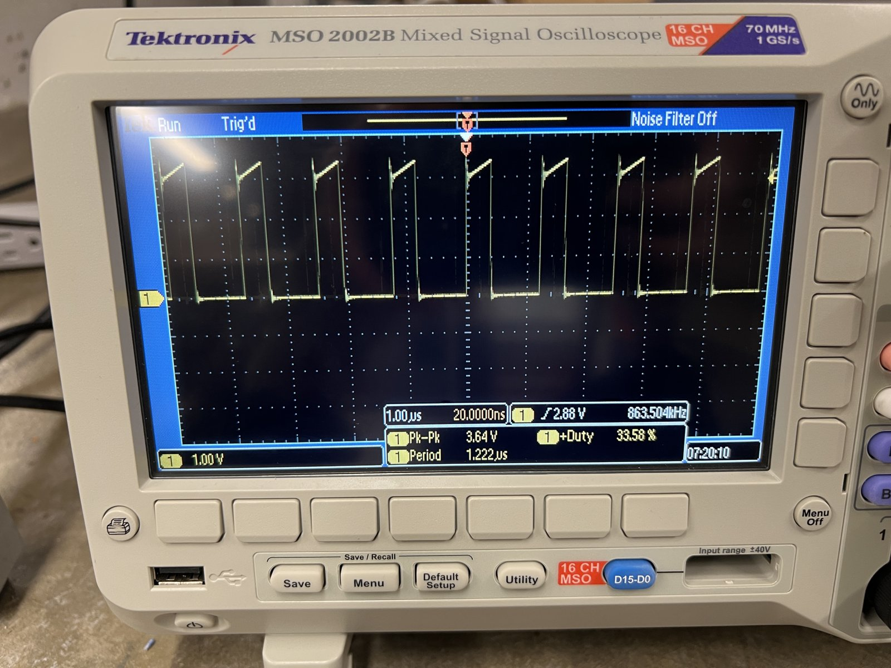
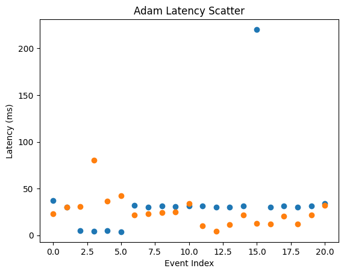
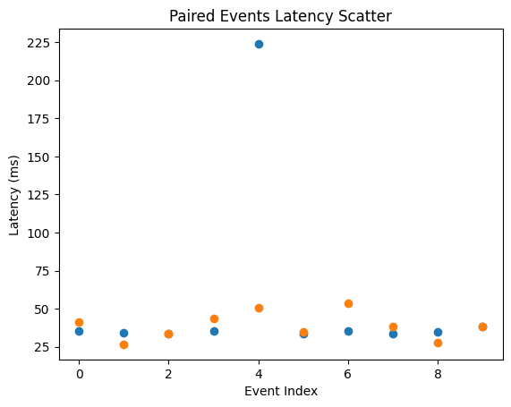

PiPacer
A multi-mode LED pacing system
By Tyler Tisinger, Rhea Desai, and Andrew Lin
In May 2026, I designed a lighting control system along with Tyler Tisinger and Rhea Desai for ECE5725: Design with Embedded Operating Systems. Inspired by Tyler's involvement on the track team and seeing other university track teams incorporate LEDs for pacing on race tracks, this lighting system allows for multiple runners to keep track of their pace visually along every step of the way. The system is also capable of flashing LEDs at the rate of the tempo of a song via BPM matching in the bass frequencies. Various lighting patterns and color changes can also be programmed for any use case. Overall, this multipurpose lighting system keeps user interface design in mind for runners while ensuring real-time system performance for both races and musical acts.
Introduction
The goal of this project is to develop a multi-use wavelight product designed for usage inside of Barton Hall. There are 3 main components: Pacer mode for track practices and races, Lighting mode for dynamic visual patterns, and Music mode which processes audio input to synchronize lightning with beats per minute (BPM) of a song. The project initially focused on creating a scalable pacer wavelight system suitable for a large indoor track meets, but the Music and Lighting modes were later incorporated to expand functionality and reflect team members’ interests in music integration. Thus, the goal of the project was not just to create an application that works in the lab and demo environment, but to make it robust enough to be deployed into the real world in a multipurpose track/event space such as Barton Hall. Significant effort went into designing and testing to ensure a seamless and intuitive user experience while maintaining high performance across all system features.
Project Overview
At a high level, the team utilized a Raspberry Pi 4 to host a web server that enables users to control an LED strip across three distinct modes: Pacer, Music, and Lighting. Through multiple development iterations, the project resulted in a fully functional and responsive web-based control system, with over 3,000 lines of code implemented to support backend logic, hardware interfacing, and frontend interaction. Additional features such as saved presets and event logging were integrated to enhance usability and provide persistent configuration and system feedback.
My Contributions
I was largely responsible for real-time system performance testing and validation of the user interface for all three modes: runner pacing, tempo matching, and lighting control. Learn more about this analysis here.
Design and Testing
Overall Architecture
To accomplish the project goals, a robust tech stack was developed to provide significant flexibility and scalability. The first design decision was choosing which software library to use for hosting a web server to allow a user to easily interface with the hardware. The team selected Flask since it is lightweight and easy to scale effectivly for a project of our size. Flask acts as a web framework that handles incoming HTTP requests, routes them to the appropriate backend logic, and returns responses to the user interface. Once the hosting framework was chosen, Python was used as the primary programming language because of the team’s familiarity and proficiency with it. The Python backend defines the application logic and API endpoints that Flask exposes for client interaction. The team then found a software library (rpi-ws281x) that could drive the LED strip and opted for a Python-based implementation to maintain consistency across the stack. For the front end, HTML and Javascript were chosen as they are easily supported by Flask and offer creative freedom with the front end. JavaScript communicates with the Flask backend by sending asynchronous requests via fetch to Python-defined routes, allowing real-time updates and control of the system without requiring full page reloads. This interaction enables seamless data exchange between the user interface and the hardware control logic.The tech stack is summarized in the figure below.

Pacer Implementation Details
The pacer implemenation started with an isolated test directory with 3 simple files - manager, pattern, test. This provided a minimal framework to test the rpi_ws281x library along with exploring initial design ideas for how a pacer should behave. In this first approach, each pacer pattern owned its own LED strip object and independently controlled which LEDs were updated each cycle, as dictated by set pace speed. The manager was made to be a basic scheduler and would determine when each activ pacer object would run.
However, once most features were implemented and tested for both dynamic and constant pacer classes, the system was tested with multiple concurrent pacers, and a major architectural issue emerged. Allowing each pattern object to own its own LED strp instance caused conflicts at the hardware interface level and led to corrupted data signals and frozen strip behavior.
To resolve this, the architecture was redesigned around a centralized Pacer Manager, which is now the sole owner of the LED strip interface object. All pacer objects register with this manager, which collects positional data from each active pacer, resolves index conflicts (prioritizing faster pacers when overlap occurs), and performs a single strip update after all patterns have been iterated through. This updated approach ensures predictable behavior and eliminates race conditions that were apparent in the initial implementation.

Lighting Implementation Details
Despite the structural similarities, several challenges rose during implementation. One major issue involved inconsistent behavior when starting and stopping lighting patterns. Through debugging, it was found that even though each mode (Pacer, Lighting, Music) had its own manager which controlled its own LED strip object, conflicts still occured at the hardware level. This was caused by multiple strip instances attempting to interface and control the same hardware, even if they were not actively driving updates.
To resolve this, the architecture was refactored so that all managers share a single, global LED strip object. This ensures that only one interface to the hardware exists at any time, reducing any funkiness with the software handling of active pacer managers and strip object control.
Another issue was more subtle but involved color ordering. Although the LED strip is labeled as RGBx, it seems to expect color data in GRB order, which was not clearly documented. This mismatch caused green to turn into red and vice versa and required a system-wide adjustment to how color data is formatted for transmission to the strip.

Hardware
While performing a test to see if all the LEDs on the strip would turn on using strandtest.py, we were met with faulty results. The signal seemed to travel all the way to the last LED when tested with an oscilloscope, but the LEDs would not turn on, despite putting a high number of LEDs in the test program. By simply tinkering with the LED strip, the LEDs would travel farther, but then the LEDs would freeze and render control useless. Thus, we were skeptical about the integrity of the strip as delicate touches would destroy control. In fact, it was not until later on that we realized that the library probably does not support the WS2814 chip, as there was no constant in the top-level of the library which referred to the WS2814 chip. Only WS2811, SK6812, and WS2812 constants were available.
Thus, we resorted to using the 5V LED strip which uses the SK6812 chip instead. This seems to be a chip that is officially supported by the LED driver library as mentioned earlier. As seen in the video below, the test program runs much more seamlessly on the strip and does not have any glitches in lighting.
Recalling the issues experienced with the level shifter, we decided to analyze the signal with an oscilloscope to ensure that the signal is being translated from 3.3V to 5V properly. When shifting to 5V, however, we find that the flatline of the raw 3.3V PWM signal is not maintained when shifted to 5V. In fact, the signal seems to have a high rising edge, falls back down to near 3.3V, and then slopes upward to near 5V at the falling edge of the signal. This is questionable for integrity of communication from the Pi to the LED chip, especially with the strict timing protocol required of the SK6812 chip. That is,
VIH = 0.7 · VDD
according to the datasheet. That means the input signal must be at least 3.5V. A 3.3V signal is thus below the guaranteed threshold. However, the LED seemed to work fine and no noticeable LED rendering issues could be seen physically, even though the level-shifted control signal was not being generated correctly.



System Performance Analysis
To analyze the performance of the LED pacing system, we compare the commanded pace to the measured LED travel time across multiple trials. We analyze timing accuracy, consistency, and sources of error to determine whether the system meets the required performance specification. The experiment involves testing a 60 second pace around the LED strip and analyzing the difference from when the LED strip turns off at the end of the split to when the first LED turns on. The seven measured lap times were 60.012, 60.007, 60.014, 60.020, 60.014, 60.020, and 60.011. Thus, the mean lap time is 60.014s, with an average error of +14ms from the commanded pace. The standard deviation is 5ms, and the max deviation is 20ms, which is nearly 5x better than the 100ms requirement. Thus, the pacing system does meet the required timing accuracy for reliable runner feedback.
The next practical metric worth measuring is the latency between the web interface and the start/stop button of the pacer. This is important, as a user should receive a realtime response with the LED pacer starting as soon as the user presses the start button. To evaluate this metric, three start/stop experiments were performed: one pacer called “Adam 200 at 30” which had a 1 lab 4s pace, another pacer called x which had a 8s pace of 4 laps, and a third experiment which involved starting both of these paces at the same time. Across all trials, the pacer system demonstrates stable and predictable timing behavior. For simultaneous pacer activations, combined start latencies averaged 35.3 ms with a standard deviation of 1.7 ms, while combined stop latencies averaged 38.9 ms with a standard deviation of 8.2 ms. These values indicate that concurrent pacer operation introduces only modest overhead and remains well within acceptable timing limits.
When analyzed independently, the primary pacer (“Adam 200 at 30”) exhibited typical start latencies of 29–32 ms and stop latencies of 20–35 ms, with two isolated outliers (220 ms start, 80 ms stop). This is probably due to OS scheduling, despite the processes being run at realtime. The secondary pacer (“x”) showed consistently low start latencies (~4 ms) and stop latencies (~6 ms). Overall, the system maintains timing accuracy and responsiveness even under concurrent load, with no evidence of systemic drift or instability. This is pretty good, as the user will barely notice any latency between the press of the start button and the first LED turning on.


Perf Tests
Another important analytical tool is perf, which is a Linux tool designed to give insight on how code performs on the CPU, including cycles, instructions, context switches, kernel time, and much more. This allows us to analyze where latency, jitter, or slowdowns might come from. To run this test, various different experiments were performed where perf was run over 20 seconds: idle, pacer running, lighting running, music running, and each of these tests with all four cores loaded with a csort file from Lab 4. Across all the scenarios, we saw the CPU utilization remaining low (5-20% of a core) except for the music-loaded case, which ended up saturating one of the cores due to continuous audio processing. 1.021 CPUs were used in the case where the processor was loaded as the beat detection algorithm was active, which is the higher number of CPUs used as opposed to the other tasks (lighting, pacing) under load, which only went up to 0.1 CPUs. Even under load, the context switch and CPU migration rates were pretty low, which showed that the realtime scheduler applied to the program provided predictable timing and didn’t preempt the program too much. Overall, we can see that the system maintains a stable, predictable performance across all of the modes, with minimal jitter and no evidence of CPU starvation even under load.
Cyclictests
Cyclictest measures the wake-up latency of a thread, allowing us to get pure measurements of real-time performance and understand how long the kernel takes to respond. In pacer mode, the latency profile is quite close to the idle latencies, where most wake ups only occur within 7-12 microseconds. Thus, the real-time control loop does not introduce jitter and the scheduler is prioritizing the FIFO thread. The same is shown for the lighting mode and the music mode, even under load. This shows that the system works pretty well under the PREEMPT_RT kernel and the application is able to maintain predictable timing even under load.
Conclusions
Based on the performance tests, the PiPacer meets our expectations of falling within pretty low end-to-end latency, with an average of less than 40ms from the time the user presses the start button on the pacer to when the first LED lights up on the strip. In addition, the system performs surprisingly well under load, as the program is running on a FIFO scheduler with priority 1, preventing other processes and the scheduler from preempting the prorgam.
With the pacer, the project was a complete success across all fronts. The pacing lights were highly accurate, supporting a wide range of paces, pacing types, and jobs. The user interface proved to be both intuitive and robust, contributing to a smooth overall experience. Testing also demonstrated that backend latency remained low, ensuring reliable real-time performance. Additionally, developing and working through the full architecture stack was both engaging and valuable from a learning perspective.
From a production-ready standpoint, the application can be considered a success. The frontend presents a professional appearance and incorporates strong safeguards and features that enhance usability while minimizing the risk of runtime errors that cause application crashes.
Future Work
- Touchscreen usage - minimal UI on touchscreen to control paces / different modes / reset? Basically a backup control system in case the web interface is not accessible for some reason. This would also be helpful for Barton Hall usage, as the user would not need to connect to the web interface to control the system and could just use the touchscreen to start/stop paces and switch modes.
- Expand lighting patterns and allow for customization of patterns / timers on LEDs / integration with LightKey or various lighting software used at large events.
- Realtime connection with the track gun, allowing for millisecond response between the time the pace is started and when the runner knows to begin.
- Reducing latency overhead between web interface and hardware - Wi-Fi is slow, might want to consider some other more efficient wireless communication protocols and/or IR remotes if you care about realtime response
- A unidirectional buffer for level shifting from 3.3V to 5V using a 74HCT125/74AHCT125 might create a cleaner 5V control signal for the LED strip if signal integrity is to be maintained over long distances
- Scale up the sound system and test with a longer series of songs to see if it lasts. Also, make silence monitoring more accurate by possibly adjusting variables and thresholds
- Introduce more patterns in the LED music reaction system
Work Distribution
- Tyler Tisinger: Designed the overall web interface, pacer, and lighting systems.
- Rhea Desai: Implemented the music mode.
- Andrew Lin: Provided baseline backend architecture and tested the performance and reliability of the system.
Code Appendix
Google drive link to code for this final project: https://drive.google.com/file/d/1_H1Oo9e-VOvHKjjYzXDdlUZnRKPvIVQz/view?usp=sharing
Github repository link to code files for this final project: https://github.com/rd535/ece5725_finalproject.git